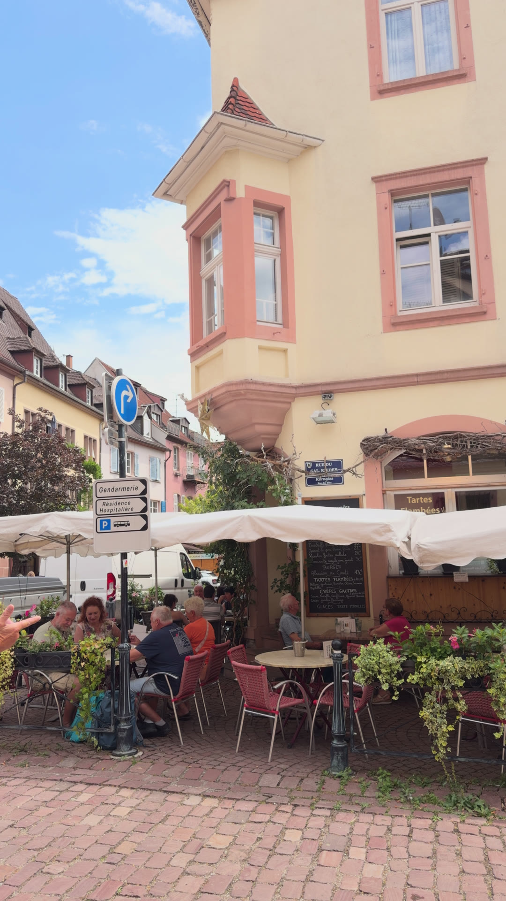
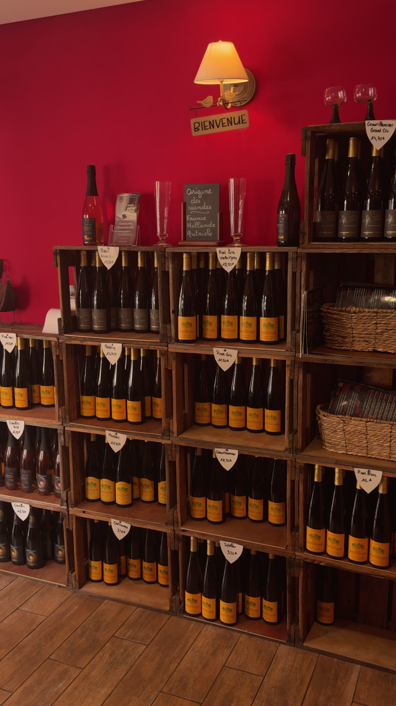

Tartes flambées
Servies à toute heure, de la nature au Munster. La spécialité de la maison.
dès 10 €
Restaurant alsacien · Kaysersberg
Spécialités d'Alsace, tartes flambées et bières maison, servies dans un cadre chaleureux au coeur de la cité médiévale.
Notre maison
Au Kaysers'Bier, on sert l'Alsace comme on l'aime : généreuse et sans chichis.
Choucroutes mijotées, baeckeoffe cuit au vin, tartes flambées croustillantes et bières brassées sous notre nom. Le tout à deux pas des maisons à colombages de Kaysersberg, l'un des plus beaux villages d'Alsace.
Une cuisine de tradition, des produits de la région et des vins des Côtes de Kaysersberg pour accompagner chaque plat.

Les incontournables
Servies à toute heure, de la nature au Munster. La spécialité de la maison.
dès 10 €Choucroute alsacienne et jarret braisé.
30 €Blonde, blanche, ambrée et brune, à la pression.
dès 3 €Trois viandes et légumes mijotés au vin blanc.
20 €Le dessert alsacien par excellence.
6 €Cuisine alsacienne, tartes flambées, vins de la région et bières maison. Prix service compris.
Galerie
Quelques images, de la terrasse à la cave à vins.
Infos pratiques
20 A rue du Général de Gaulle
68240 Kaysersberg
Horaires d'ouverture à confirmer.